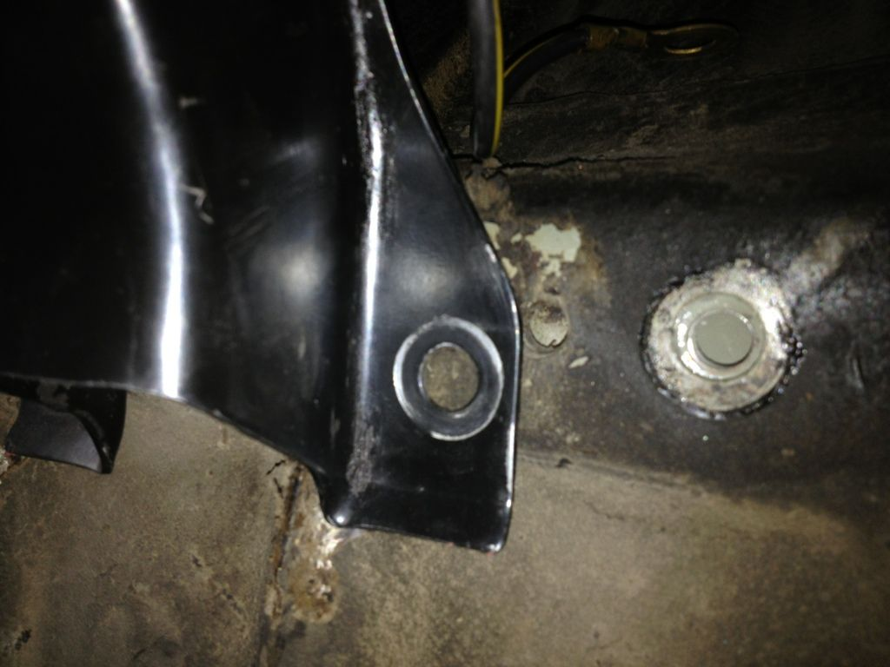

-
My 86 300zx turbo manual tranny gave out, an i found a 88 turbo tranny FS5R30A which is stronger also have the 88 turbo drive shaft what would i need to swap it on my 86 turbo keepin my original open differential any help would be apriciated.LA AVIONETA -
You will need the driveshaft flange off of any 87-89 differential. Be sure to torque it to specs when reinstalling it.
1988 300ZX Turbo, Shiro Special #760
1988 300ZX Turbo Automatic (wife's car)
1991 Hard-body 2WD
http://zccw.org/zccw/?page_id=1215 -
Thanks alot thats why i like this forum alot of helpLA AVIONETA -
One other small thing… The transmission cross-member on the 30A also won't line up on the 84-86 cars. I know this is true for 84-85 cars, and pretty sure for 86. This is a pretty simple fix; slot the transmission isolator holes where it attaches to the transmission and also slot the crossmember holes. This will give the 1/2" or so needed to get it to line up with the holes in the body.
I 2nd the "make sure to torque the pinion nut" comment. It's essential. Put some loc-tite on it or consider replacing it, as it's a swedge nut meant for one time use. -
Lines up fine on 86s.Jason84NA2T wrote: One other small thing… The transmission cross-member on the 30A also won't line up on the 84-86 cars. I know this is true for 84-85 cars, and pretty sure for 86. This is a pretty simple fix; slot the transmission isolator holes where it attaches to the transmission and also slot the crossmember holes. This will give the 1/2" or so needed to get it to line up with the holes in the body.
I 2nd the "make sure to torque the pinion nut" comment. It's essential. Put some loc-tite on it or consider replacing it, as it's a swedge nut meant for one time use.- VG30DET (HE341) 86 300ZX - 1982 280ZX Turbo - Headered NA 1986 300ZX 2+2 - 2000 Xterra - -
I'm running into this problem and the mount is NOT working on my 86. Does anyone know if the later mount will work?
1985 Nissan 300ZX 2+2- My first Z, back in the family
1987 Nissan 300ZX Turbo RIP 4/87 - 4/28/2011
Under Construction: 1986 Nissan 300ZX NA2T Slicktop
Originally posted by Tempestas -
I know the kouki body has a bunch of holes for the different positions, swapping between 71c and 30a is easy… looks like you're off more than half an inch though, is everything else lined up correctly? Is the engine seated properly and not being pushed forward by the hoses? -
My 86T didn't line up properly with the 30A. I had to slot the holes on the trans and then it fit.
1986 300ZX Turbo…sold
1990 Skyline GT-R…new money pit
2014 Juke Nismo RS 6-speed…daily -
Gee, my 4/86 must be a freak then.....I guess my friends 86NA was too. -.-NissanEgg;324944 wrote: My 86T didn't line up properly with the 30A. I had to slot the holes on the trans and then it fit.
Put some muscle into it, the crossmember and mount works fine stock.- VG30DET (HE341) 86 300ZX - 1982 280ZX Turbo - Headered NA 1986 300ZX 2+2 - 2000 Xterra - -
I think Mike may be referring to my 86 N/A there but yea. 3/86 and the 30A from my old 88T bolted in perfectly fine. Didn't require any slotting of bolt holes or anything.Hot Red 1987 Turbo VG30ET, VG33 heads, Isky 280/280 cams, SBE, gt3582r, Pucker factory intake/exhaust manifolds, ms3 pro goldbox, making 610whp at 29psi on e85 -
Mine is a 3/86 and it's off. Engine mounts are threaded in and steady. I noticed that the 84-86 and 87-89 brackets have different part numbers, so I am wondering if that's where the discrepancy lies.

1985 Nissan 300ZX 2+2- My first Z, back in the family
1987 Nissan 300ZX Turbo RIP 4/87 - 4/28/2011
Under Construction: 1986 Nissan 300ZX NA2T Slicktop
Originally posted by Tempestas -
Just measured, I am 3/4 of an inch off. Going to run to the junkyard and try to find a later mount and see if they are different.....
Shit is really stressing me out.
1985 Nissan 300ZX 2+2- My first Z, back in the family
1987 Nissan 300ZX Turbo RIP 4/87 - 4/28/2011
Under Construction: 1986 Nissan 300ZX NA2T Slicktop
Originally posted by Tempestas -
Ran the 30a mount in my 84. Little muscle and it all lined up with the new poly bushings.07 Nissan Frontier 4.0 NISMO--SOLD
84 Ranger 4x4 2.8 v6
84 AE---Future Beast IN THE WORKS http://z31performance.com/showthread…lmost-stock-ae :-)
74 260zT project vg30et---SOLD
2013 Dodge Ram 1500 HEMI Big Horn (DD)
2000 Suzuki SV650S

-
That could very well be the problem. I don't know what year mount Mike was using but mine is an 88T.Hot Red 1987 Turbo VG30ET, VG33 heads, Isky 280/280 cams, SBE, gt3582r, Pucker factory intake/exhaust manifolds, ms3 pro goldbox, making 610whp at 29psi on e85 -
No mang, shit is a challenge…work it out.TearingRaven;324962 wrote: Shit is really stressing me out.Cha iro
enjoy building it yourself.
if it fails, fuck it.
at least you gave it a whirl.

Copyright © 2006–. All rights reserved. Privacy Policy